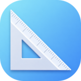

Requisiti minimi: macOS 26 Tahoe • Apple Silicon
Utility per macOS che, a partire dalla risoluzione di un'immagine o di un video, calcola l'aspect ratio standard più vicino tra quelli utilizzati dall'app Foto di Apple.
Per ogni file vengono inoltre generate automaticamente 4 risoluzioni compatibili con l'aspect ratio selezionato, mostrando chiaramente le diverse modalità di crop o di adattamento.
1:1, 4:5, 5:4, 3:4, 4:3, 5:7, 7:5, 2:3, 3:2, 3:5, 5:3, 9:16, 16:9
Basta trascinare un file immagine o video nell'app per ottenere la risoluzione originale e l'aspect ratio standard più vicino.
L'app genera 4 possibili risoluzioni compatibili con l'aspect ratio selezionato:
• una soluzione con crop su entrambi i lati
• una soluzione con crop solo sulla larghezza
• una soluzione con crop solo sull'altezza
• una soluzione senza crop, con overscale
È possibile modificare manualmente l'aspect ratio scegliendo tra quelli standard supportati, per calcolare rapidamente risoluzioni alternative rispetto a quella suggerita automaticamente.
Ad esempio, partendo da un video 1080x1920 px e impostando aspect ratio 3:4:
• 1080x1440 px → crop dell'altezza
• 1440x1920 px → nessun crop, ma overscale della base
L'app mostra inoltre come varia la risoluzione al cambiare dello zoom. Ad esempio, uno zoom al 150% su un video 1080x1920 equivale a lavorare su 720x1280 px.
Questo permette di ridurre il peso dei progetti mantenendo la stessa qualità finale, evitando overscale inutili.
Versione: 05-05-2026
Scarica per macOSL'app non è firmata con certificato Apple. macOS bloccherà il primo avvio. Segui le istruzioni incluse nello ZIP per aprirla.